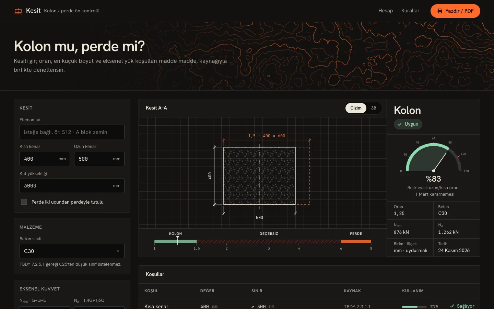

Kolon mu, perde mi? Kesit söylesin.
Boyutları girin; oran, en küçük kenar ve eksenel yük sınırları yönetmeliğe göre madde madde denetlensin. Her sonuç maddesiyle, çiziminde ve raporunda.
1 Mart kararnamesiTBDY 2018TS 500TS 498
Örnek pafta · Kesit A–Acanlı gösterim
Üç adımda ön kontrol, sıfır tahmin.
- 01
Kesiti girin
Kısa ve uzun kenar, kat yüksekliği, beton sınıfı ve eksenel kuvvet. Yükü TS 498'e göre alandan da hesaplayabilirsiniz.
- 02
Paftayı okuyun
Kesit ölçülü çizilir; oran cetveli kolon, geçersiz ve perde bölgesini gösterir, gösterge en zorlayıcı koşulu söyler.
- 03
Raporu yazdırın
Girdiler, yük türetimi, çizim ve her koşulun kaynağı A4 rapora tek tıkla dökülür.
